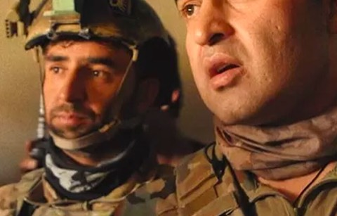
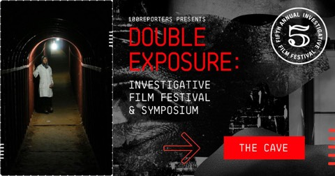

National Geographic Museum
Films screened here

RetrogradeMatthew Heineman2022 · 95 min
The CaveFeras Fayyad2019 · 90 min
Sessions held here
- 2019 · Sat Oct 12 · 10:30 PMReceptionClosing Night Party
- 2022 · Sun Oct 16 · 7:00 PMReceptionClosing Night Party